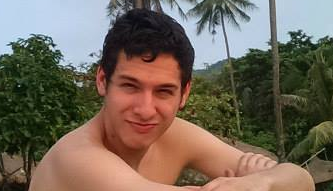
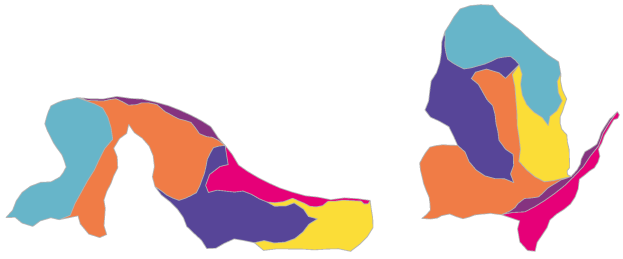
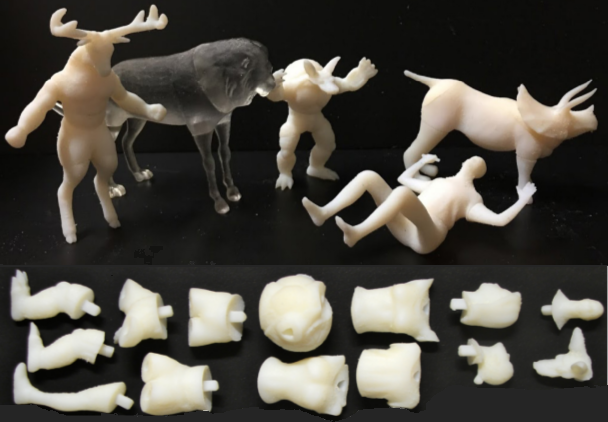
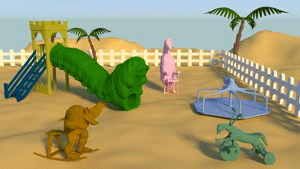
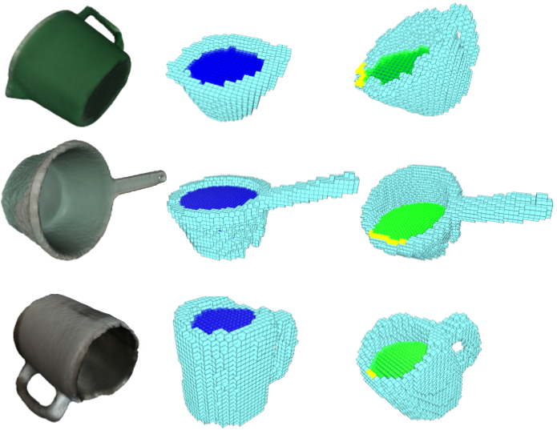

|  |
Noah DuncanPh.D. CandidateComputer Science DepartmentUniversity of California Los AngelesEmail: nduncan at cs dot ucla dot edu |
|---|
I am a Ph.D. Candidate in Computer Science at the University of California in Los Angeles. I am jointly advised by Professor Demetri Terzopoulos, Professor Lap-Fai Yu and Professor Sai-Kit Yeung. Before joining UCLA, I received my B.S. in Computer Science from Harvey Mudd College in 2012.
My research focuses on novel computational approaches for solving open-ended geometric design problems.
|  |
Approximate Dissections ACM Transactions on Graphics (Proceeding of ACM SIGGRAPH Asia 2017) |
|---|---|
|  |
Interchangeable Components for Hands-on Assembly Based Modeling ACM Transactions on Graphics (Proceeding of ACM SIGGRAPH Asia 2016) [Project Page] [Paper] [Video] |
|  |
Zoomorphic Design ACM Transactions on Graphics (Proceeding of ACM SIGGRAPH 2015) [Project Page] [Paper] [Video] |
|  |
Fill and Transfer: A Simple Physics-based Approach for Containability Reasoning. IEEE International Conference on Computer Vision (ICCV 2015) [Project Page] [Paper] [Video] |